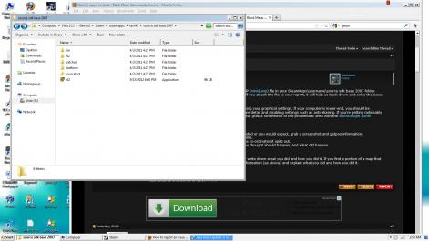

hi,
So far I’ve been loving Black Mesa, well, except for this strange crash that’s been repeatedly happening (at least 10 times) to me:
After about 5-20 minutes of game-time (approx), my screen displays a single green, sometimes blue, horizontal streak, which is immediately followed by a screen of solid, slightly flickering/changing, black bars. My sound starts repeating the last 1/2 second of sound for a bit, then just goes to noise. it doesn’t seem to ever stop, although one time I was able to get task manager up, and kill the game. All other times, I’ve just had to reboot on crash. What’s really strange is that there doesn’t seem to be any MDMP file being created. I’m looking in steam/steamapps/(my username)/source sdk base 2007, and there isn’t a single mdmp file in sight. Also, this crash does not appear to be tied to specific spots-- after a crash, i can play through that area a dozen times and not have a single error.
OS: Windows 7, sp 1, 64 bit
Processor: Intel Core2 Duo CPU P8700 @ 2.53 GHz x2
RAM: 4 Gigs
Video Card: ATI Mobility Radeon HD 4650
Any help would be greatly appreciated; I’m itching to get back to playing Black Mesa!
